|
3-4-2-1
|
Uzbekistan | 1 | - | 3 | Colombia |
4-3-3
|
| HT 0-1 | ||||||
|
FIFA World CupThursday 18 June 2026
|
||||||
- Venue
- Mexico City Stadium
- Attendance
- 80,824
- Referee
- Anthony Taylor
Yellow card34'
A. Khusanov
- 2
Substitution46'
O. Urunov
D. Khamdamov
S. Nasrullaev
F. Sayfiev
Goal60'
A. Fayzullayev
- 2
Substitution77'
R. Ashurmatov
J. Urozov
A. Fayzullayev
A. Amonov
Substitution90+3'
E. Shomurodov
I. Sergeev
Whistle45+6'
45+6'
Yellow card7'
J. Mojica
Goal40'
D. Muñoz
Assist: L. Díaz
Goal65'
L. Díaz
Assist: G. Puerta
Substitution72'
J. Rodríguez
J. Campaz
- 2
Substitution80'
G. Puerta
R. Ríos
L. Suárez
C. Hernández
- 2
Substitution90+3'
L. Díaz
A. Gómez
J. Arias
K. Castaño
Goal90+9'
J. Campaz
Assist: C. Hernández
Uzbekistan | |
|---|---|
Goalkeeper | |
| 1 | U. Yusupov |
Defender | |
| 2 | A. Khusanov 34' |
| 5 | R. Ashurmatov 77' |
| 18 | A. Abdullaev |
Midfielder | |
| 6 | A. Mozgovoy |
| 7 | O. Shukurov |
| 11 | O. Urunov 46' |
| 13 | S. Nasrullaev 46' |
| 22 | A. Fayzullayev 60'77' |
| 24 | B. Karimov |
Forward | |
| 14 | E. Shomurodov 90+3' |
Substitutes | |
| 4 | F. Sayfiev 46' |
| 17 | D. Khamdamov 46' |
| 20 | A. Amonov 77' |
| 21 | I. Sergeev 90+3' |
| 26 | J. Urozov 77' |
Colombia | |
Goalkeeper | |
| 12 | C. Vargas |
Defender | |
| 2 | D. Muñoz 40' |
| 3 | J. Lucumí |
| 17 | J. Mojica 7' |
| 23 | D. Sánchez |
Midfielder | |
| 11 | J. Arias 90+3' |
| 14 | G. Puerta 80' |
| 16 | J. Lerma |
Forward | |
| 7 | L. Díaz 65'90+3' |
| 10 | J. Rodríguez 72' |
| 25 | L. Suárez 80' |
Substitutes | |
| 5 | K. Castaño 90+3' |
| 6 | R. Ríos 80' |
| 19 | C. Hernández 80' |
| 21 | J. Campaz 72'90+9' |
| 26 | A. Gómez 90+3' |


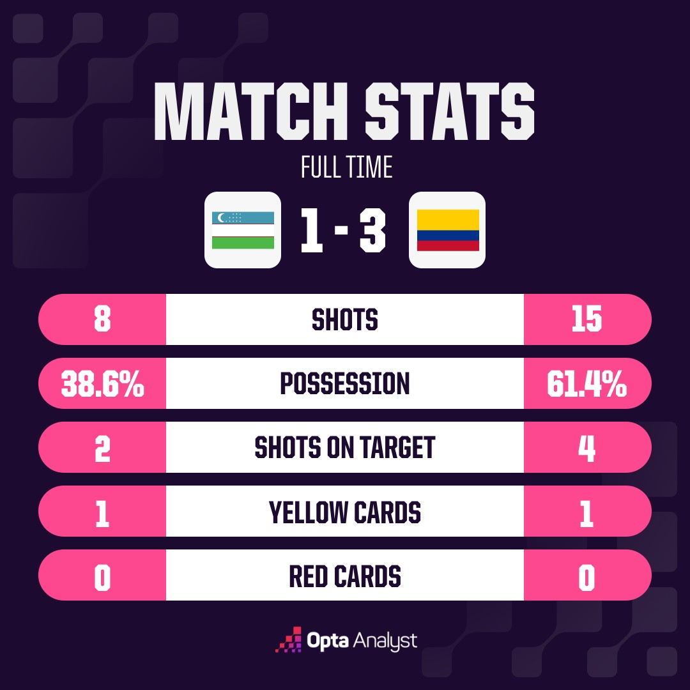
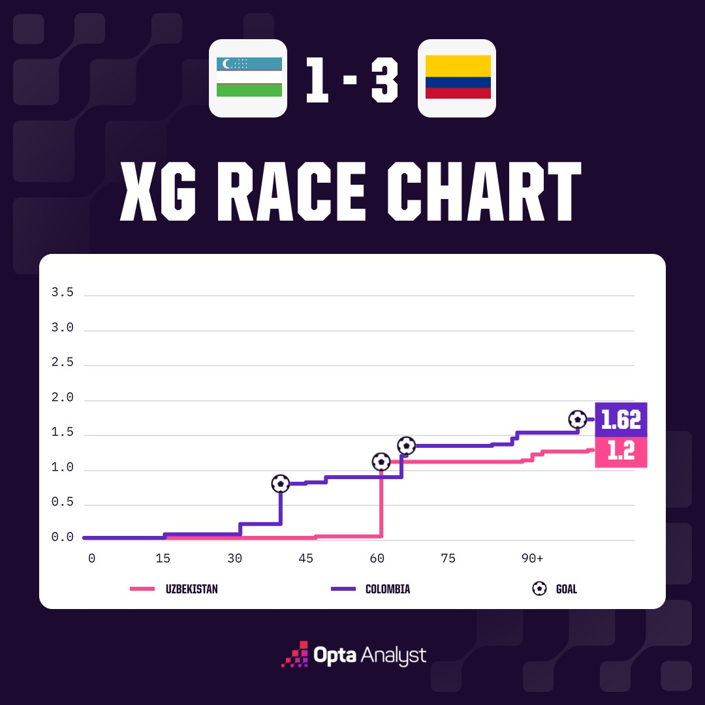
102'
Colombia are undefeated in their last 4 games in the FIFA World Cup, their last joint longest unbeaten streak was from 14th June 2014 to 28th June 2014.
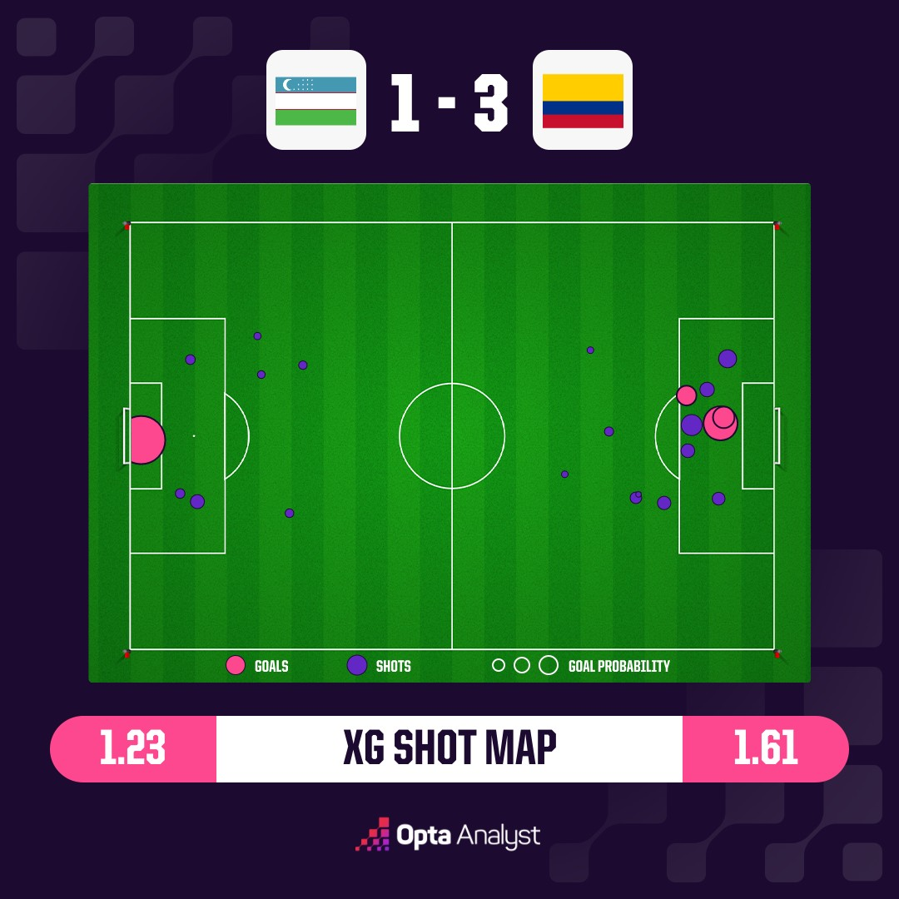
90+11'
That's it! The referee blows the whistle and we have reached full-time. The final score at Mexico City Stadium is Uzbekistan 1-3 Colombia.
90+11'
It's all hands on deck for Colombia as they defend their lead, making a wave of critical blocks and clearances
90+11'
Shot blocked! Azizbek Amonov unleashes an attempt at goal, but the ball does not reach its target thanks to Jefferson Lerma, who makes a solid block to stem the danger – for now.
90+9'
Colombia have scored 3 goals in the FIFA World Cup game for the first time since 24th June 2018 against Poland (W3-0).
90+9'
Is that game over? Colombia are now well ahead, having extended their lead to 2 goals thanks to Jaminton Campaz’s effort. It’s now 3-1, and Uzbekistan face an uphill battle to get back into it.
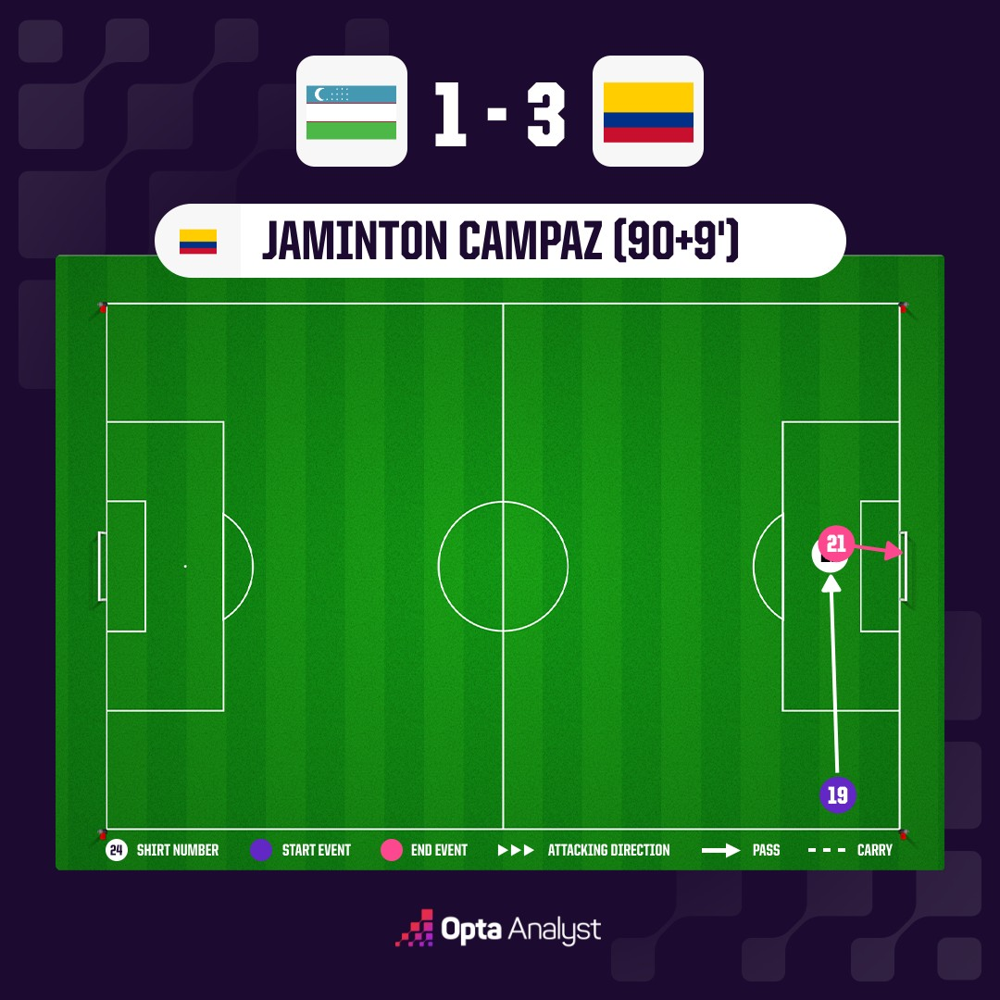
90+7'
A free-kick in a dangerous position now for Uzbekistan, after a foul from Daniel Muñoz on Akmal Mozgovoy. Can Uzbekistan make Colombia pay for that rashness from Daniel Muñoz?
90+6'
Uzbekistan have had plenty of the ball in the last 15 minutes, with 65.55% possession compared to just 34.45 % for their opponents. However, there’s not been any goal to come from that possessional dominance just yet.
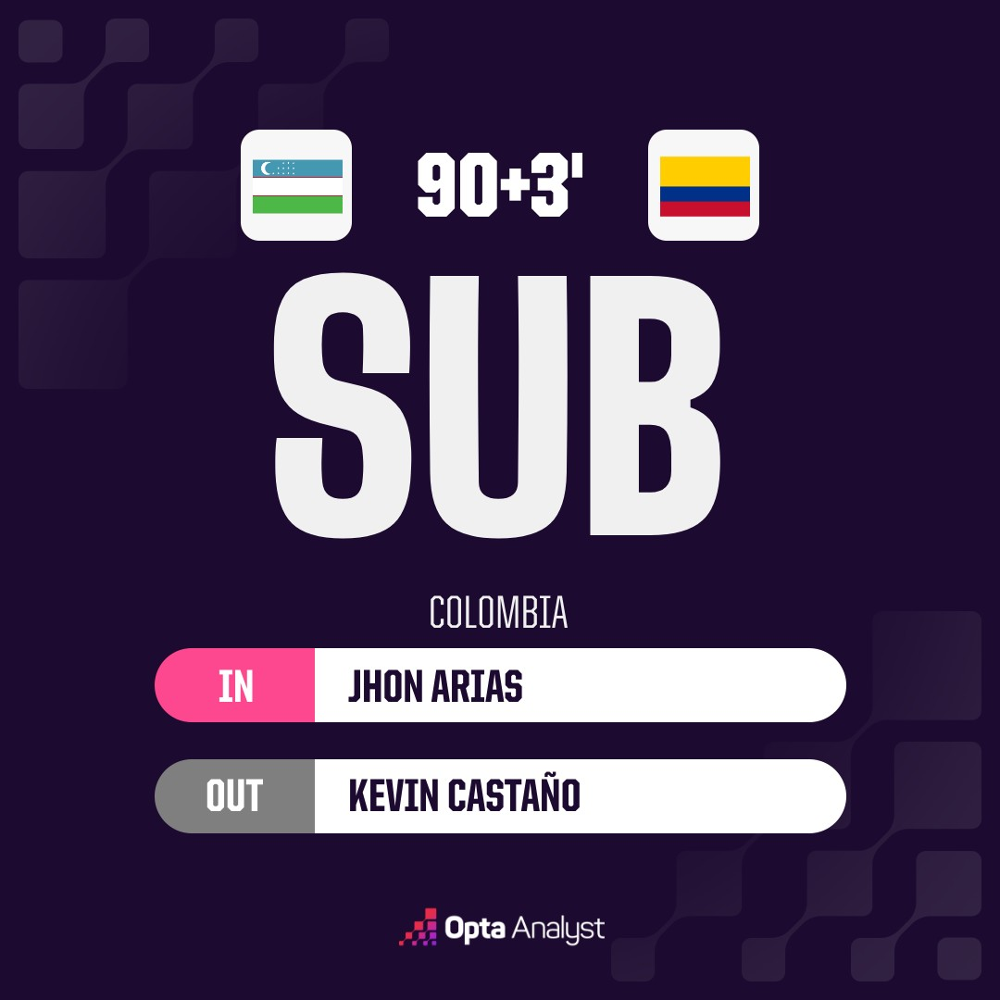
90+3'
The Uzbekistan manager is looking to the substitutes’ bench, bringing on Igor Sergeev in place of Eldor Shomurodov. Will the change make a difference? Let’s find out!
90+3'
Substitution! Kevin Castaño replaces Jhon Arias for Colombia as the manager shuffles the pack. Can Kevin Castaño make an impression as this match continues?
90+3'
Substitution! Andrés Gómez replaces Luis Díaz for Colombia as the manager shuffles the pack. Can Andrés Gómez make an impression as this match continues?
90+2'
That is a disappointing effort from Dostonbek Khamdamov, who went for glory but got their attempt wrong, and the shot sailed off target. A frustrating moment for Uzbekistan.
90+1'
No luck! Akmal Mozgovoy takes on a shot that, had they got it right, might have been set to test the goalkeeper, but instead it is sent off target and Colombia come away unscathed.
88'
Dostonbek Khamdamov's effort is deflected out for a corner. Can Uzbekistan make anything of this set-piece?
87'
That is a disappointing effort from Jaminton Campaz, who went for glory but got their attempt wrong, and the shot sailed off target. A frustrating moment for Colombia.
87'
Still behind, but Uzbekistan are refusing to roll over - defensive urgency rising as they fend off more pressure and push for a late turnaround.
86'
MISS! A shot from Jefferson Lerma ends up being off target. They might have done a bit better with that one, but it remains Colombia 2-1 Uzbekistan.
84'
Can Uzbekistan make this chance count? They have won a free-kick in a threatening position after a foul from Richard Ríos on Otabek Shukurov. Will Colombia's defence be tested here?
83'
It’s backs to the wall now — Colombia throwing everything into defending their advantage, with a flurry of crucial interventions.
82'
Davinson Sánchez goes in on Farrukh Sayfiev and concedes a foul. The free-kick is not in a particularly dangerous area from Colombia’s viewpoint, though.
82'
Colombia have attempted the last 5 shots in this game, Uzbekistan last shot was taken by Abbosbek Fayzullayev in the 60th minute.
82'
MISS! A shot from Johan Mojica ends up being off target. They might have done a bit better with that one, but it remains Colombia 2-1 Uzbekistan.
81'
A rash challenge from Eldor Shomurodov, who sends Jaminton Campaz tumbling, giving Colombia a free-kick. It is not in a threatening position, but it gives them a chance to get back on the ball.
80'
Colombia are making a tactical change. Luis Suárez is leaving the field and in their place comes Cucho Hernández – we will soon see if this switch has the desired impact.
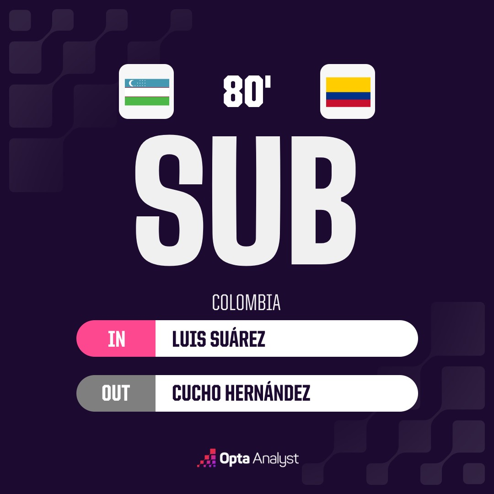
80'
Gustavo Puerta’s match is over as Colombia decide to make a substitution. Richard Ríos enters the field in what looks like a tactical change.
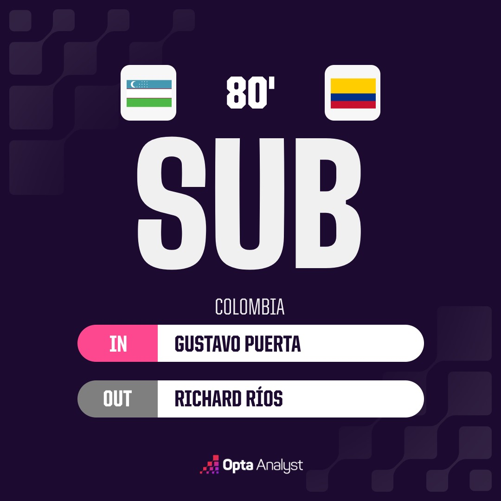
79'
A rash challenge from Abdulla Abdullaev, who sends Luis Suárez tumbling, giving Colombia a free-kick. It is not in a threatening position, but it gives them a chance to get back on the ball.
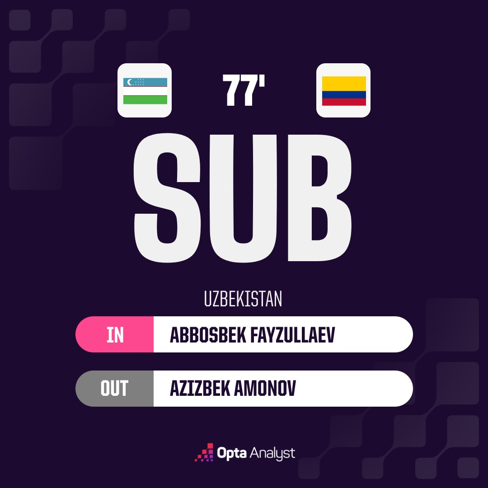
77'
Abbosbek Fayzullayev’s match is over as Uzbekistan decide to make a substitution. Azizbek Amonov enters the field in what looks like a tactical change.
77'
An enforced substitution for Uzbekistan, as Rustam Ashurmatov cannot carry on after sustaining an injury. Jakhongir Urozov has hastily warmed up and now made their way onto the pitch in Rustam Ashurmatov's place.
76'
Entering the final stages of this contest, let’s check on the possession stats for each team. It is Colombia who have had the more of the ball, with 66.71%, while Uzbekistan have had to settle for 33.29%. The score is 2-1.
76'
This game is certainly in a bit of a lull now, with neither team having had an attempt at goal in the past 10 minutes. It could do with something to spark it into life. Colombia have had more possession during the quiet spell, but are yet to do much with it.
75'
Good play from Luis Díaz, who draws a foul from Abdukodir Khusanov to hand Colombia a free-kick in a dangerous position. Will they create something from this set-piece?
74'
No luck – it’s offside! Luis Díaz looked to dart in behind and get on the end of a pass, yet they just went too early, and the flag is up to signal offside.
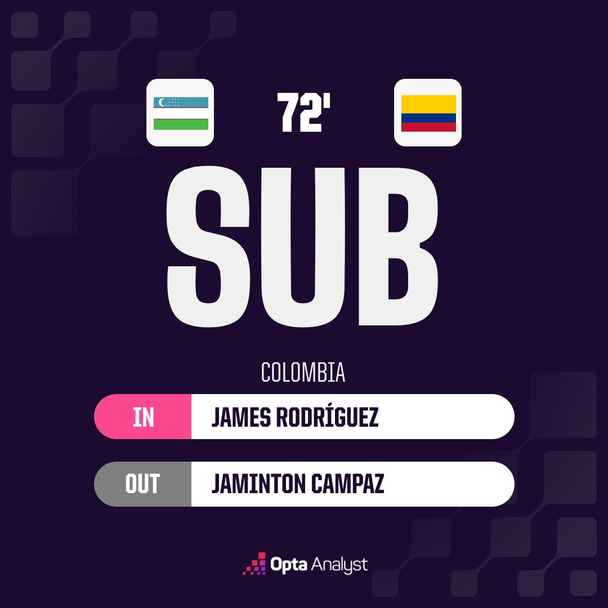
72'
Colombia are making a tactical change. James Rodríguez is leaving the field and in their place comes Jaminton Campaz – we will soon see if this switch has the desired impact.
65'
GOAL! Colombia move in front! Luis Díaz provides the decisive touch from inside the penalty area to leave Uzbekistan chasing the game. It is too early to predict whether that will prove the winner, but as things stand Colombia have the advantage!
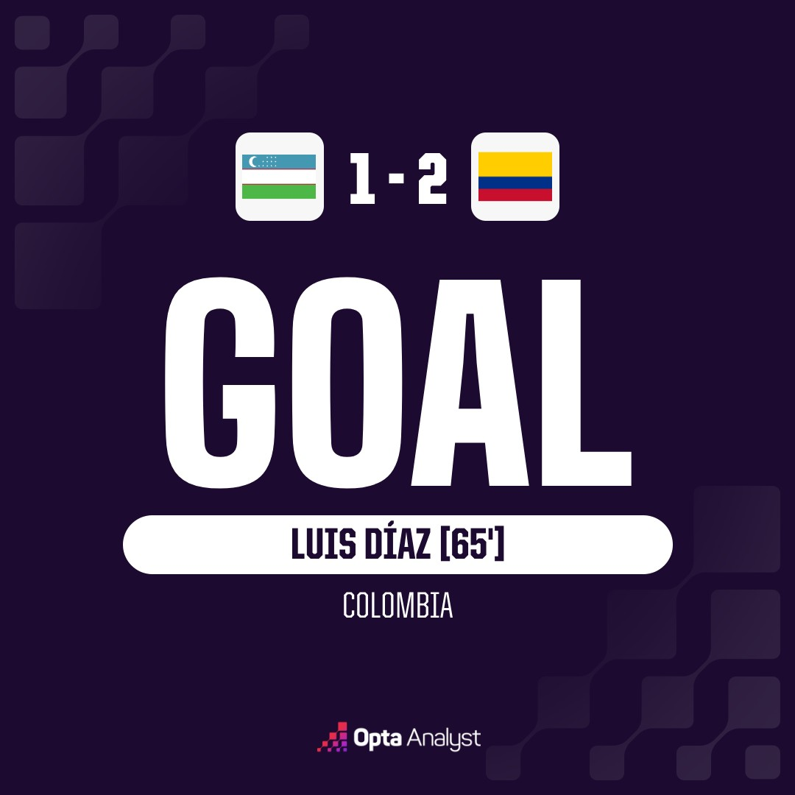
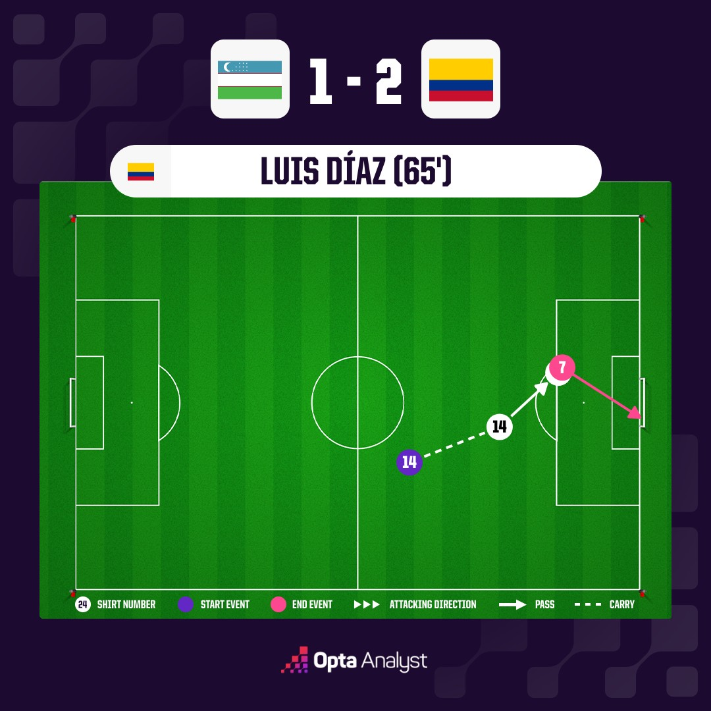
64'
No luck! Davinson Sánchez takes on a shot that, had they got it right, might have been set to test the goalkeeper, but instead it is sent off target and Uzbekistan come away unscathed.
64'
Corner now for Colombia, as they see a shot from Jefferson Lerma deflected out of play for a set-piece. Uzbekistan have some defending to do, here. Could this result in a big opportunity?
64'
BLOCK! An intervention from Abdulla Abdullaev might have just prevented a goal, with the defending player getting in the way of an attempt from Jhon Arias. Solid defending there!
62'
A foul from Gustavo Puerta on Farrukh Sayfiev sees Uzbekistan win a free-kick, but it is not in a dangerous position, so Colombia should be confident they can defend it easily enough.
60'
We are level! It’s all square after Abbosbek Fayzullayev finishes from inside the area. It’s Uzbekistan 1-1 Colombia – will either team go onto win it now? It’s all to play for in the final stages.
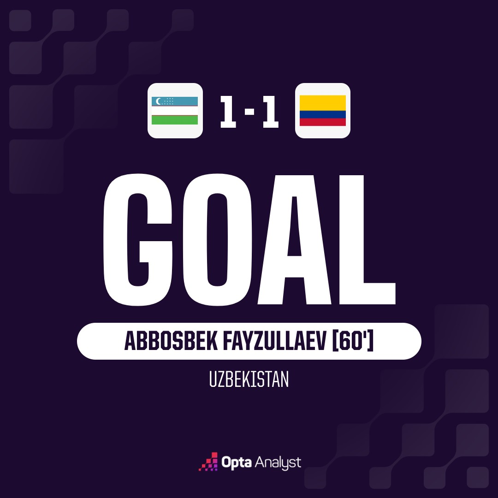
60'
OFF THE UPRIGHT! Eldor Shomurodov looks all set to score as their effort beats the Colombia goalkeeper, but the woodwork comes to Uzbekistan’s rescue. A lucky escape! It remains 0-1.
60'
SAVED! Good work from Camilo Vargas, who stands firm to deny Eldor Shomurodov, who managed to get a shot away from inside the Colombia area.
59'
A lull in this match, as the teams prob and probe, but without much success. It has been 10 minutes since there was an attempt from either side, though Colombia are seeing more of the ball, with 60 per cent possession to Uzbekistan’s 40 per cent during that time.
58'
Despite trailing, Uzbekistan are showing real defensive grit, digging in and stopping further damage as they try to build a platform.
57'
A rash challenge from Abdulla Abdullaev, who sends Luis Suárez tumbling, giving Colombia a free-kick. It is not in a threatening position, but it gives them a chance to get back on the ball.
53'
Despite trailing, Uzbekistan are showing real defensive grit, digging in and stopping further damage as they try to build a platform.
52'
Free-kick! A foul from Abbosbek Fayzullayev on Luis Díaz. It is well away from Uzbekistan’s goal, so it is unlikely to result in a chance for Colombia.
49'
A chance now for Uzbekistan to get a good delivery into the box, after the ball is diverted behind for a corner. Uzbekistan have been pushing for what would be a key goal, but Colombia have stood firm so far.
49'
Great defending from Colombia, who are staying organised and winning key battles to preserve their lead.
48'
A rash challenge from Jhon Arias, who sends Otabek Shukurov tumbling, giving Uzbekistan a free-kick. It is not in a threatening position, but it gives them a chance to get back on the ball.
46'
Substitution! Dostonbek Khamdamov replaces Oston Urunov for Uzbekistan as the manager shuffles the pack. Can Dostonbek Khamdamov make an impression as this match continues?
46'
A substitution for Uzbekistan sees Sherzod Nasrullaev replaced by Farrukh Sayfiev. There does not appear to be any obvious sign of an injury, so that is a tactical switch.
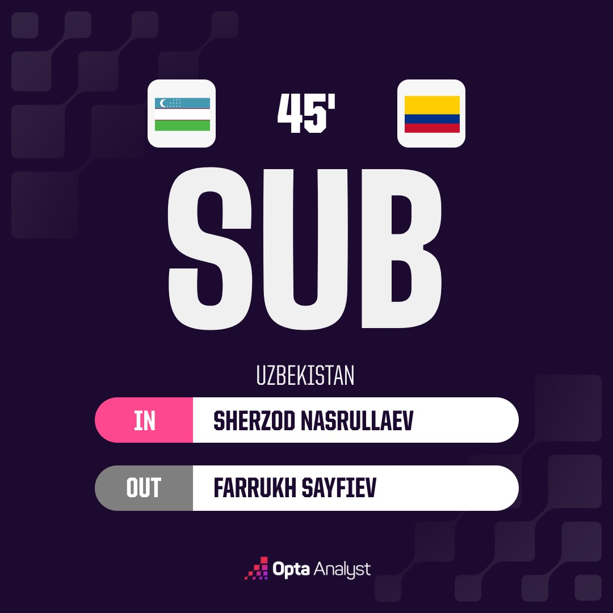
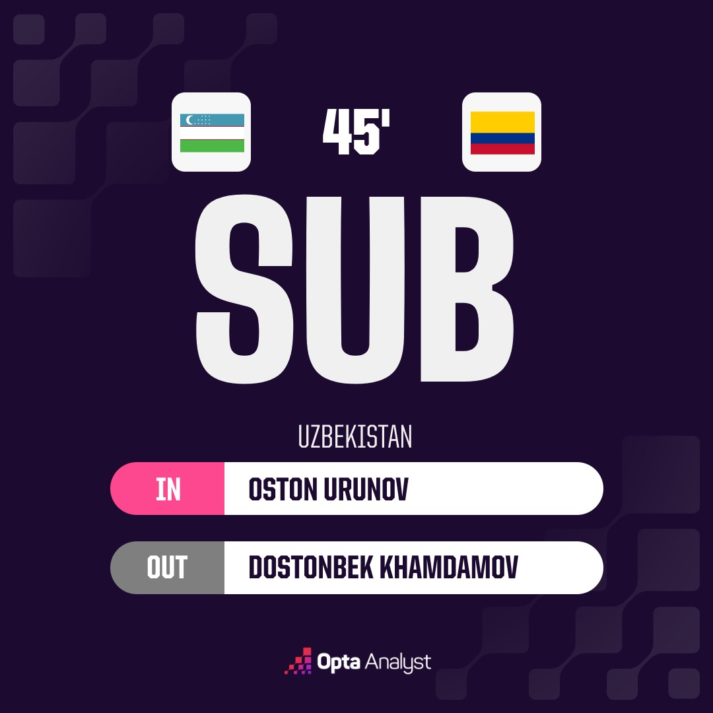
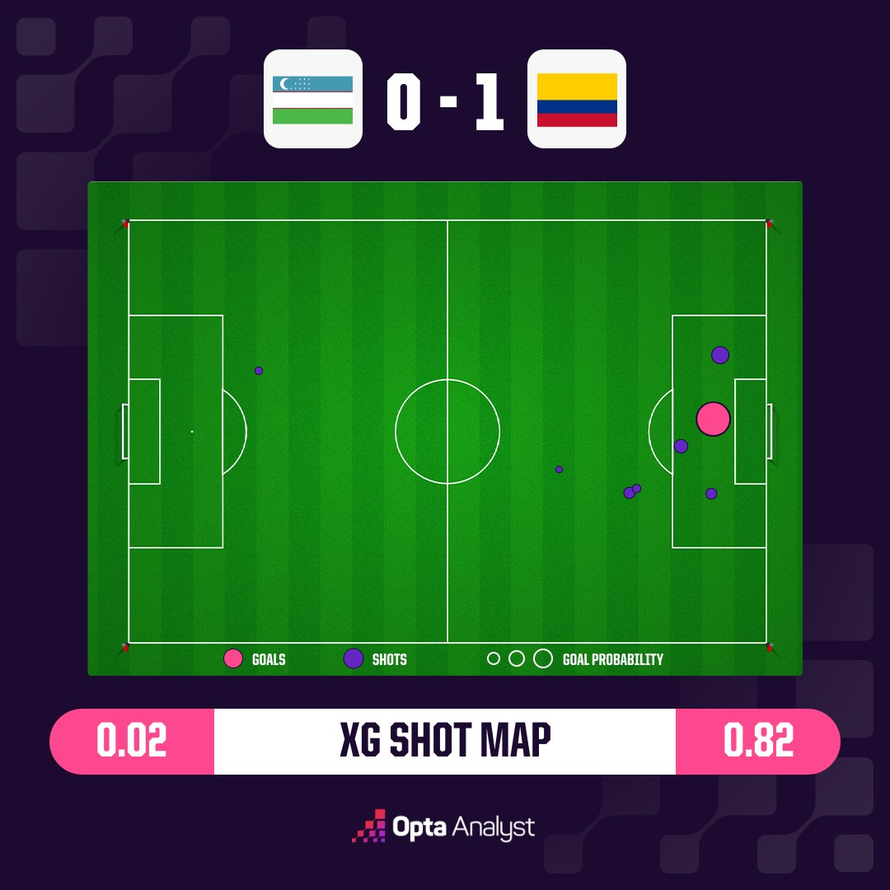
45+6'
The first half comes to a close and it’s Colombia who have the lead over Uzbekistan at Mexico City Stadium, with the scoreline 0-1 at the interval. Will Uzbekistan turn this around after the break?
45+4'
Great block from Akmal Mozgovoy, as they get in the way of an attempt from Gustavo Puerta that might have been set to cause the goalkeeper some problems. Solid defending from the Uzbekistan player.
45+4'
MISS! A shot from Jefferson Lerma ends up being off target. They might have done a bit better with that one, but it remains Colombia 1-0 Uzbekistan.
45+2'
Free-kick! A foul from Bekhruz Karimov on Luis Díaz. It is well away from Uzbekistan’s goal, so it is unlikely to result in a chance for Colombia.
45+2'
That is a disappointing effort from Bekhruz Karimov, who went for glory but got their attempt wrong, and the shot sailed off target. A frustrating moment for Uzbekistan.
45+1'
Offside! Luis Suárez thought they were through on goal, but the Uzbekistan defence stepped up in time to catch them offside, and the assistant referee puts their flag up.
45+1'
James Rodríguez goes for goal with a strike from distance, but Utkir Yusupov is able to watch it all the way and make the save. A bit of a tester, there.
42'
Uzbekistan have not had a shot so far in this game.
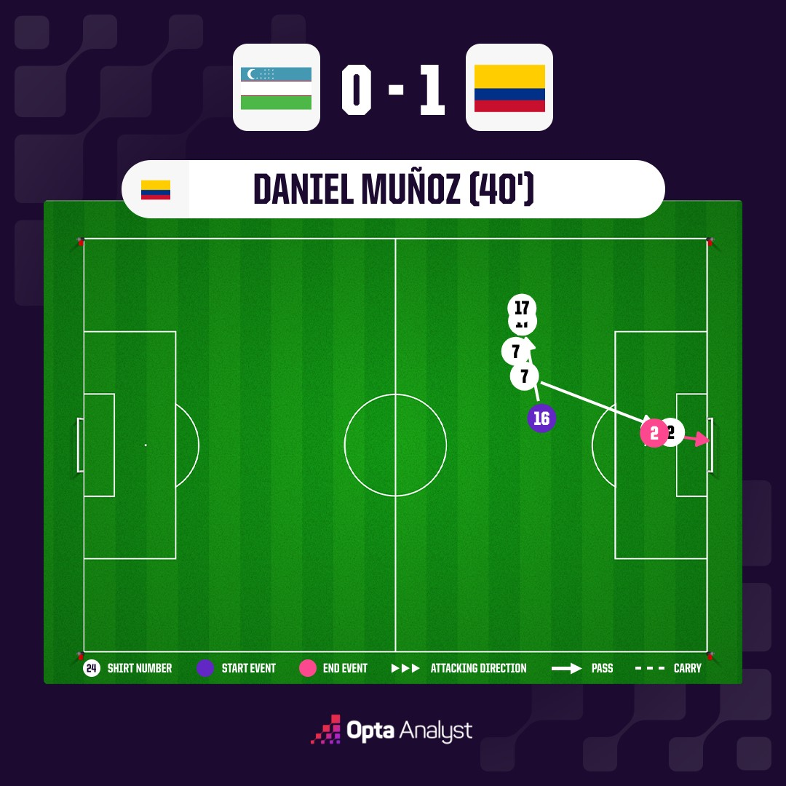
40'
GOAL! Colombia have scored and it is Daniel Muñoz who has put them in the lead! Daniel Muñoz applies the finish and while that is not game over for Uzbekistan, they have plenty of work to do now! We will see if that strike proves to be the winner!
40'
Great block from Rustam Ashurmatov, as they get in the way of an attempt from James Rodríguez that might have been set to cause the goalkeeper some problems. Solid defending from the Uzbekistan player.
38'
A foul from Jhon Lucumí on Eldor Shomurodov sees Uzbekistan win a free-kick, but it is not in a dangerous position, so Colombia should be confident they can defend it easily enough.
35'
Free-kick! A foul from Jefferson Lerma on Utkir Yusupov. It is well away from Colombia’s goal, so it is unlikely to result in a chance for Uzbekistan.
34'
BOOKING! Yellow card for Abdukodir Khusanov, who is penalised for a foul. The referee waves away their remonstrations, and now they will have to be careful.
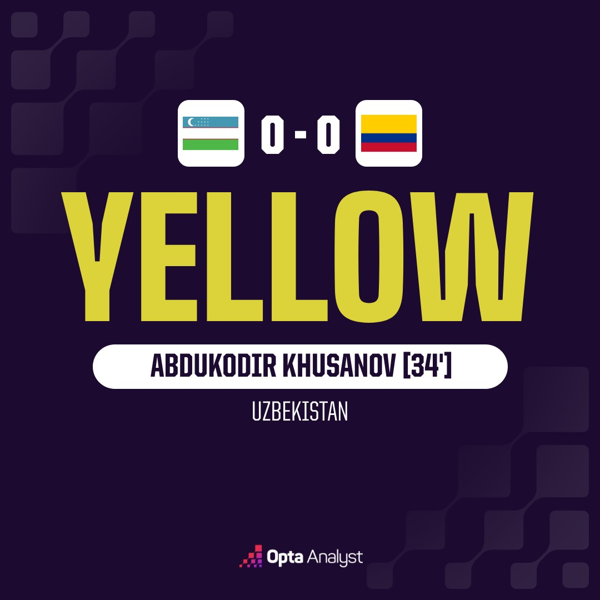
34'
Can Colombia make this chance count? They have won a free-kick in a threatening position after a foul from Abdukodir Khusanov on Luis Díaz. Will Uzbekistan's defence be tested here?
32'
What a miss! That was a huge chance for Luis Díaz, but they have failed to convert. What an opportunity that was for Colombia.
32'
Colombia are having plenty of the ball, with 71.92% possession in the last 15 minutes. However, they have been unable to transfer that possessional dominance into a goal during that period.
30'
Free-kick! A foul from Sherzod Nasrullaev on Daniel Muñoz. It is well away from Uzbekistan’s goal, so it is unlikely to result in a chance for Colombia.
29'
A free-kick to Uzbekistan, as Gustavo Puerta goes in and fouls Abbosbek Fayzullayev. However, Colombia will not mind giving one away in this area too much, with plenty of distance to their goal.
27'
Not much goalmouth action to speak of in this period of the game, with no attempts made from either side. This game could spark at any moment, however. It is Colombia who have had more of the ball, controlling 69 per cent possession in the last 10 minutes.
23'
Free-kick! A foul from Bekhruz Karimov on Jefferson Lerma. It is well away from Uzbekistan’s goal, so it is unlikely to result in a chance for Colombia.
17'
Colombia have had plenty of the ball in the last 15 minutes, with 71.65% possession compared to just 28.35% for their opponents. However, there’s not been any goal to come from that possessional dominance just yet.
17'
A chance goes begging as Jhon Arias gets off a shot that does not hit the target. They might have done better with that one, but instead it is a goal-kick to Uzbekistan.
16'
In the last 15 minutes, it is Colombia who have dominated the ball, having seen 71.54% of the possession, yet they have not been able to go and turn that into a single shot, so there is no imminent sign of a goal.
14'
Free-kick! A foul from Eldor Shomurodov on Jefferson Lerma. It is well away from Uzbekistan’s goal, so it is unlikely to result in a chance for Colombia.
13'
The Uzbekistan defence steps up in time and there is a frustration for Daniel Muñoz, who thought they were through until the flag goes up to signal offside.
11'
A rash challenge from Abdulla Abdullaev, who sends Luis Suárez tumbling, giving Colombia a free-kick. It is not in a threatening position, but it gives them a chance to get back on the ball.
11'
This game is certainly in a bit of a lull now, with neither team having had an attempt at goal in the past 10 minutes. It could do with something to spark it into life. Colombia have had more possession during the quiet spell, but are yet to do much with it.
7'
The referee goes to their pocket and pulls out a yellow card, which is brandished in the direction of Johan Mojica. Will they be able to avoid a second booking?
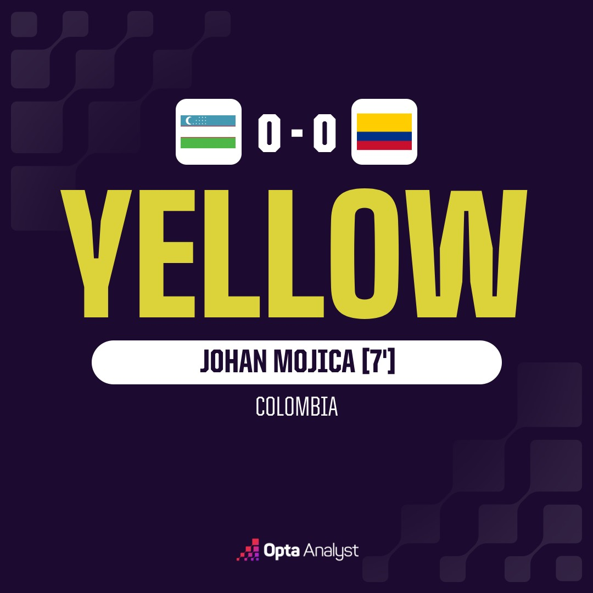
7'
A free-kick in a dangerous position now for Uzbekistan, after a foul from Johan Mojica on Abbosbek Fayzullayev. Can Uzbekistan make Colombia pay for that rashness from Johan Mojica?
4'
This could be a chance for Colombia, after Abdukodir Khusanov fouls Johan Mojica, handing them a free-kick in a threatening area. A good set-piece from here could really test the Uzbekistan defense!
2'
Free-kick! A foul from Bekhruz Karimov on Luis Díaz. It is well away from Uzbekistan’s goal, so it is unlikely to result in a chance for Colombia.
1'
Can Uzbekistan make this chance count? They have won a free-kick in a threatening position after a foul from Jhon Lucumí on Eldor Shomurodov. Will Colombia's defence be tested here?
1'
And we are off! Strap in, folks, for this mouthwatering encounter between Colombia and Uzbekistan at Mexico City Stadium.
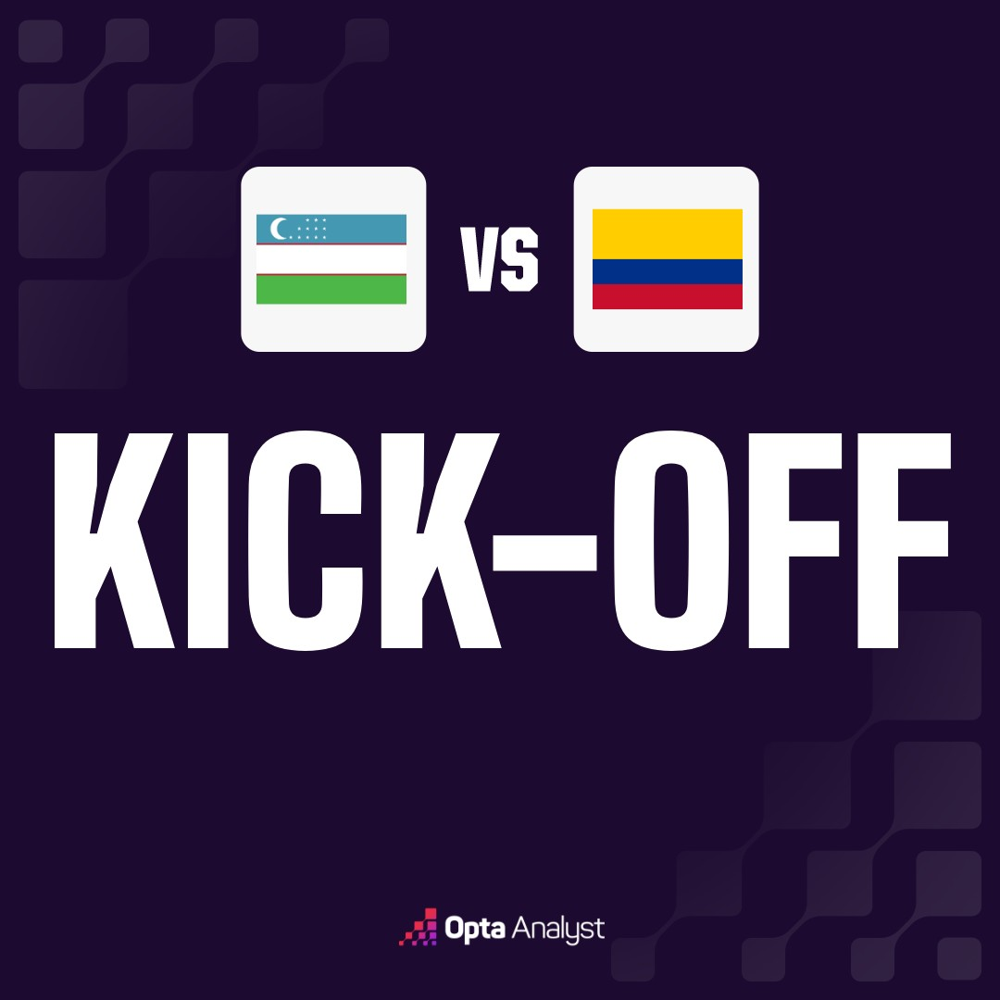
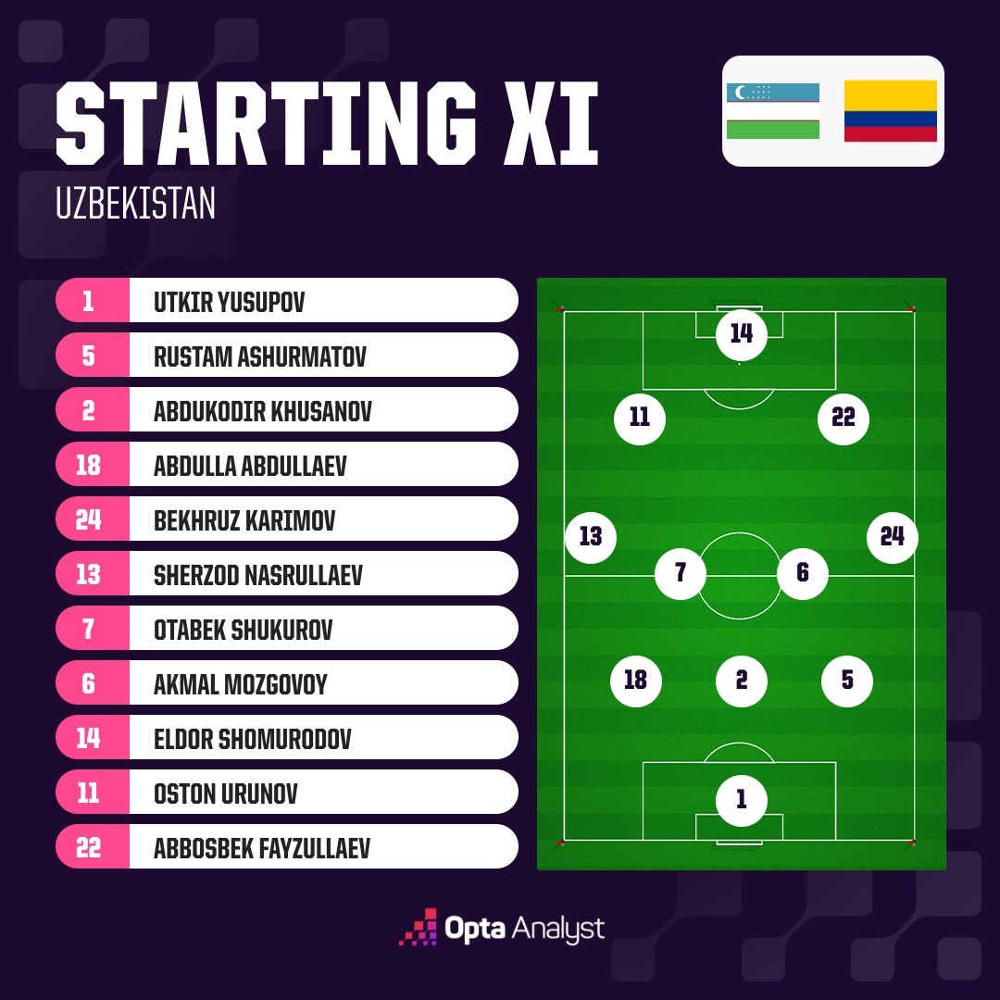
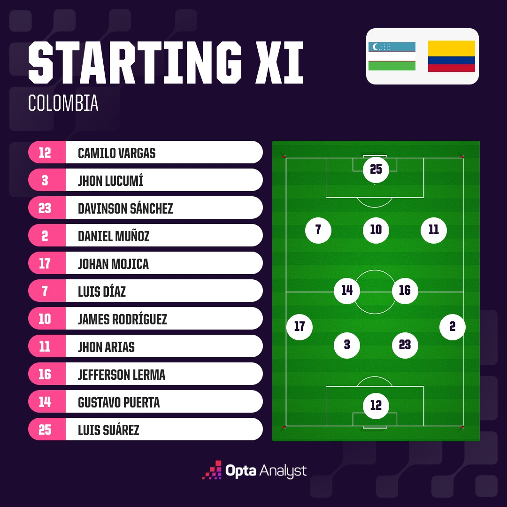
Uzbekistan will play Colombia on Wednesday for their opening match of the 2026 Canada/Mexico/USA FIFA World Cup group stage at Mexico City Stadium.
Both sides are playing their first match of the competition. Uzbekistan's last match saw them beaten 2-1 by the Netherlands in a June 8 friendly at Icahn Stadium. Igor Sergeev netted in the loss. In four games this year, they have two wins and two losses.
Colombia won their last game on June 7, beating Jordan 2-0 in a friendly at Snapdragon Stadium. Jhon Arias was the only player on the scoresheet, netting two goals. In 2026, they have won two and lost two.
Sergeev has caught the eye this year for Uzbekistan. He is the side's only scorer with one goal. Arias has been the most prolific player for Colombia in 2026, netting on three occasions, including two match-opening goals.
In their last six matches in all competitions, Uzbekistan have won four and lost two. The Uzbek side scored six and conceded five over that period, scoring first in one of the six contests. They had two first-half goals, while their opponents netted once in the first 45 minutes. Colombia have won four and lost two in their last six. The Colombian side scored 12 and conceded seven over that period, netting first in five of the six. They had five goals in the first half, while their opponents netted five times before the break.
-
General
Possession 38.6% 38.62961.37161.4% Possession lost in defensive half 32 323131 Possession lost in middle third 56 563838 Duels 73 737575 Duels success rate 46.6% 46.5754848.0% Aerial duels 18 181818 Aerial duels won 55.6% 55.55644.44444.4% Successful dribbles 5 555 Fouls won 11 111414 Offsides 0 033 Corner awarded 3 344 -
Distribution
Passes 319 319519519 Long passes 53 534848 Long passes proportion (%) 16.6% 16.6149.2499.2% Passing accuracy 76.2% 76.17685.54985.5% Passes in opponents' half 157 157300300 Passing accuracy in opponents' half (%) 60.5% 60.5179.33379.3% Total passes in the final third 89 89131131 Passing accuracy in final third (%) 52.8% 52.80967.93967.9% Forward passes 226 226330330 Forward passes (%) 70.8% 70.84663.58463.6% Through balls 2 255 Final third entries 53 535757 Penalty area entries 16 163535 Total open play crosses 7 799 Crosses 13 131616 Crossing accuracy 23.1% 23.07737.537.5% -
Attack
Goals 1 133 Shots 8 81515 Shots on target 2 244 Blocked shots 2 244 Headed shots 2 222 Shots outside the box 4 455 Shots inside the box 4 41010 Shots accuracy excluding blocked shots 33.3% 33.33336.36436.4% Shooting accuracy 25.0% 2526.66726.7% Key Passes 5 51111 -
Defence
Tackles 10 101010 Tackles success rate 70.0% 703030.0% Clearances 24 242020 Interceptions 7 766 Recoveries 39 394343 Attacking third recovery 1 133 Defensive third recovery 27 272323 Midfield third recovery 11 111717 Recoveries in attacking half (%) 2.6% 2.5646.9777.0% -
Discipline
Fouls conceded 14 141111 Yellow cards 1 111 Red cards 0 000